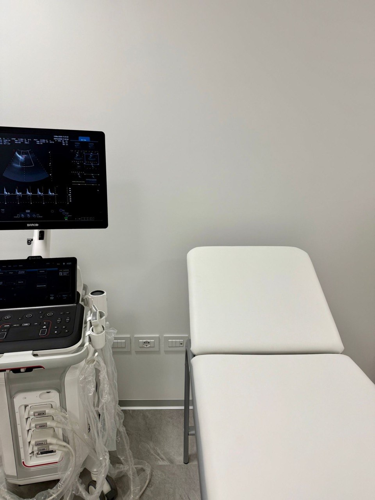

Diagnostica in tempo reale, sicura e non invasiva, senza radiazioni ionizzanti.
L'ecografia è un esame diagnostico non invasivo che utilizza gli ultrasuoni — onde sonore ad alta frequenza — per visualizzare in tempo reale organi, tessuti e strutture interne del corpo umano. Una sonda ecografica emette le onde sonore che, penetrando nei tessuti, vengono riflesse in maniera diversa a seconda della loro densità. Le onde di ritorno vengono elaborate dal software e convertite in immagini nitide sul monitor.
L'ecografia è uno degli strumenti diagnostici più versatili e sicuri della medicina moderna: non utilizza radiazioni ionizzanti, è completamente indolore e permette di osservare gli organi mentre sono in funzione, rilevando anche minime alterazioni strutturali.

Al Centro Diagnostico Latorre eseguiamo una vasta gamma di ecografie specialistiche.
Studio di fegato, colecisti, pancreas, milza, reni, surreni e grandi vasi addominali. Fondamentale per la diagnosi di colelitiasi, steatosi epatica, cisti e noduli.
Valutazione della ghiandola tiroidea e dei linfonodi laterocervicali. Prima indagine di scelta per noduli tiroidei, gozzo e tiroiditi.
Studio di muscoli, tendini, legamenti e borse articolari. Ideale per tendiniti, strappi muscolari, cisti sinoviali, sindrome del tunnel carpale.
Studio del seno, spesso integrato alla mammografia. Fondamentale per la caratterizzazione di noduli e masse e per il monitoraggio delle pazienti giovani.
Studio dell'utero, delle ovaie e del feto in gravidanza. Permette di monitorare la crescita fetale e diagnosticare patologie pelviche femminili.
Studio della prostata per la valutazione di volume, struttura e lesioni. Eseguibile per via transaddominale in associazione alla valutazione delle vie urinarie.
Studio del flusso sanguigno nelle arterie e nelle vene: tronchi sovraortici (TSA), arterie renali, arti inferiori arteriosi e venosi.
Studio dei linfonodi superficiali del collo, ascelle e inguine. Utile nel follow-up oncologico e nella diagnosi di linfoadenopatie.
Eseguita da specialisti esperti con strumentazione di ultima generazione. Referto in giornata.
Prenota Ora